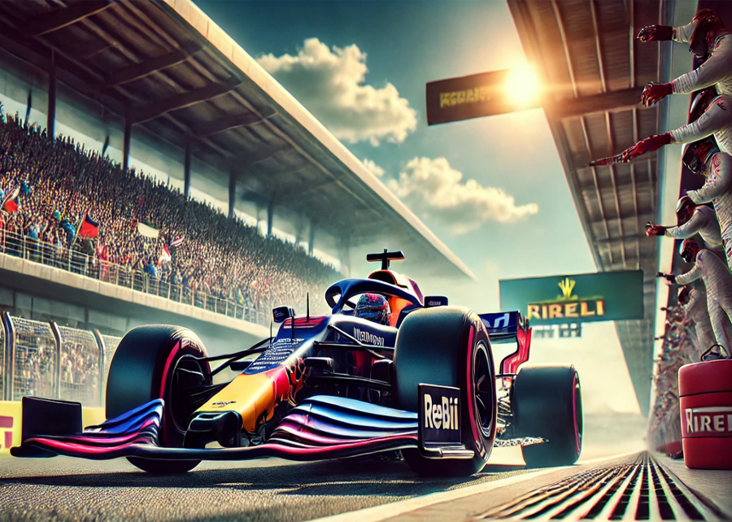
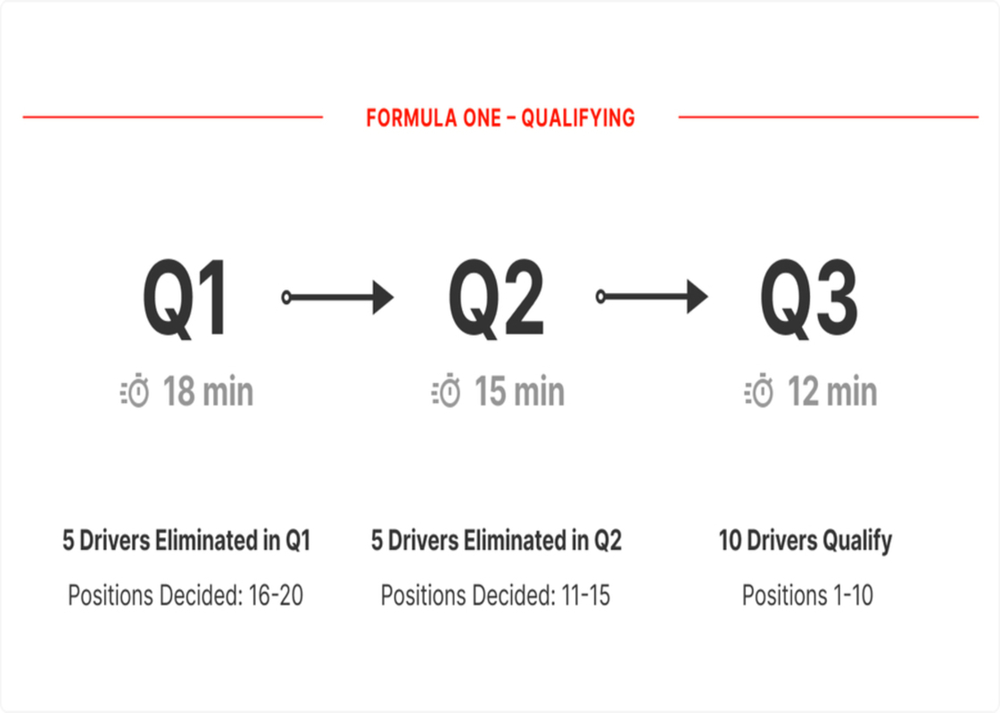

Las sesiones de prácticas libres, conocidas como FP1, FP2 y FP3, son fundamentales para el rendimiento de los equipos durante un fin de semana de carrera. Se llevan a cabo el viernes y el sábado antes de la carrera.
Durante estas sesiones, los equipos tienen la oportunidad de probar diferentes configuraciones del auto, ajustar la aerodinámica y experimentar con diversos compuestos de neumáticos. Esto les permite recopilar datos cruciales sobre el comportamiento del auto en la pista y adaptarse a las condiciones cambiantes, como la temperatura y la humedad. Las prácticas libres son vitales porque permiten a los pilotos familiarizarse con el circuito y a los ingenieros optimizar el rendimiento del auto.
La clasificación se divide en tres fases: Q1, Q2 y Q3, y determina la posición de salida de cada piloto en la carrera.
Q1: En esta fase, todos los pilotos tienen 18 minutos para registrar su mejor tiempo. Los cinco más lentos son eliminados y ocuparán las últimas posiciones en la parrilla.
Q2: Los 15 pilotos restantes tienen 15 minutos para mejorar sus tiempos. Los cinco más lentos quedan eliminados y ocupan las posiciones 11 a 15.
Q3: Los 10 pilotos más rápidos de Q2 compiten en esta fase final, que dura 12 minutos, para determinar las posiciones 1 a 10. La posición en la parrilla es crucial, ya que influye en las posibilidades de éxito en la carrera.
Las carreras al sprint son un formato especial que se utiliza en algunos fines de semana de carrera.
En una carrera al sprint, los pilotos compiten en una carrera corta de aproximadamente 100 km, que suele durar entre 25 y 30 minutos. El resultado de esta carrera determina la parrilla de salida para la carrera principal del domingo. Además, los puntos se otorgan a los primeros ocho pilotos que cruzan la meta, con 8 puntos para el primero, 7 para el segundo, y así sucesivamente. Este formato añade emoción al fin de semana y puede cambiar la dinámica de la carrera principal.
| Gran Premio | Fecha |
|---|---|
| Gran Premio de China (Shanghái) | 19-21 de abril de 2024 |
| Gran Premio de Miami | 03-05 de mayo de 2024 |
| Gran Premio de Austria (Spielberg) | 28-30 de junio de 2024 |
| Gran Premio de EE. UU. (Austin) | 18-20 de octubre de 2024 |
| Gran Premio de Brasil (São Paulo) | 01-03 de noviembre de 2024 |
| Gran Premio de Qatar (Lusail) | 29 de noviembre - 01 de diciembre de 2024 |